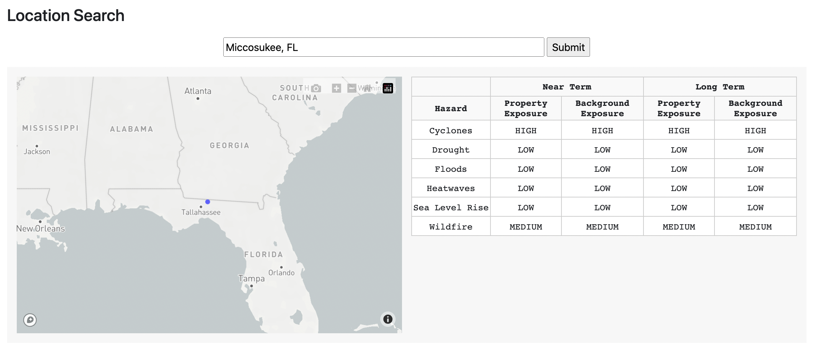

Data Description
For rapid retrieval of a single data point, Sust Global has developed the Search API. Currently available in the United States, this feature allows users to supply a lat/lon pair, and instantly get a result on the risk at that location and in the nearby area, for both the near and medium term.
In the Climate Explorer dashboard, the Search API also permits users to search by an address.

Search functionality in the Climate Explorer dashboard